2024.12
Mindset Penalty is an interactive installation that combines a wearable
inflatable device with a space-based projection, making visible the invisible
shackles that school uniforms impose on the body and mind.
In today's Chinese society, school uniforms have shifted from symbols of
progress and identity into a rigid system. By forcing students to wear them,
the uniform micro-disciplines the physical
body, and in doing so shapes a certain rigidity of mind.
The project draws on Michel Foucault's Discipline
and Punish, which frames the body as something trainable — subject
to a series of micro-punishments that ultimately subjugate it to the
authority of an institution. The wearable device and the screen work in
tandem to materialize this dynamic, restricting behavior through warnings
and inflation so the discomfort of the uniform becomes something the user
can physically feel.
In the final experience, the participant enters a designated area on the floor and sits down. The screen begins to respond, and the wearable device starts to inflate, gradually restricting the body's movement. Once the participant attempts to leave the designated area, the screen warns them; if they step fully out, the device deflates and the warning collapses into a cloud of red mist — a moment of release, and of recognition.
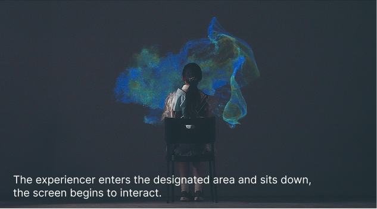
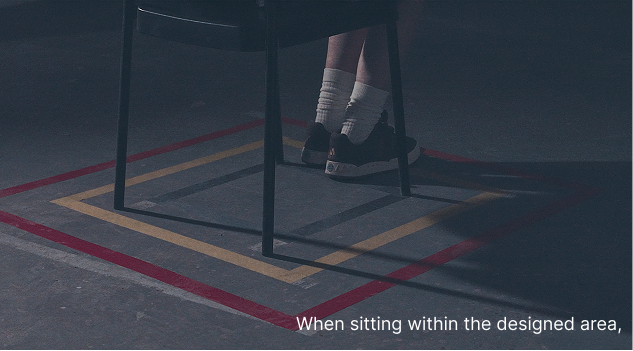
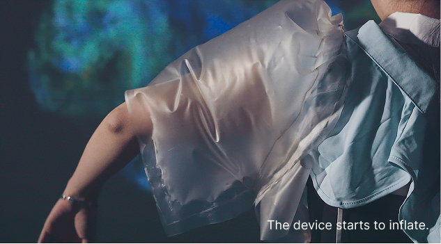
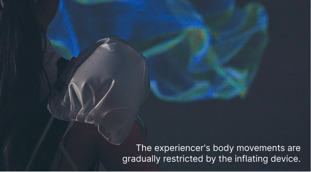
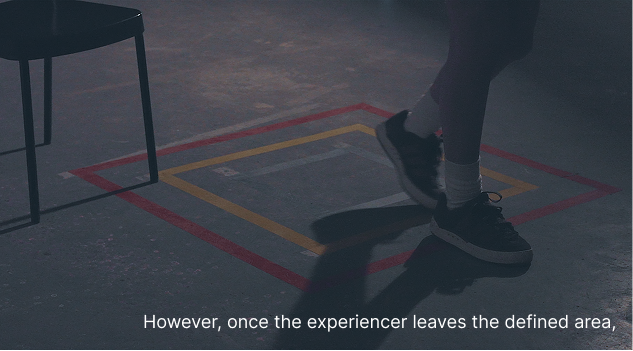
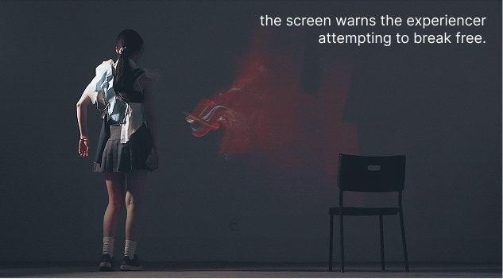
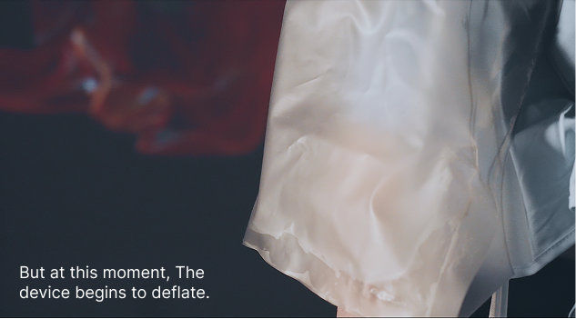
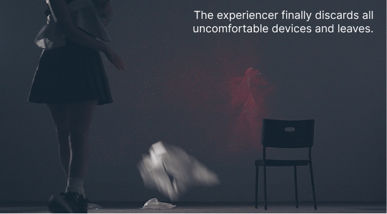
The wearable device materializes the oppressive sensation of micro-discipline.
By deconstructing elements of a typical school uniform — collars, shirts,
ties — and reassembling them with semi-transparent inflatable components,
the device gradually expands and compresses around the body, letting the
user physically feel the discomfort imposed by the uniform.
The white and dark blue colors reference the palette of most school uniforms,
and the multiple layered collars stand in for the discomfort of uniform
collars and the school's many rules.

The installation is built around three interacting parts: the wearable device, a designated area marked on the floor, and a projection screen that represents the school's authority. When the participant stands inside the area, the device inflates and the screen shows a calm, ordered pattern; when they attempt to leave, the pattern shifts to signal change, and once they step fully out, the screen warns them before collapsing.
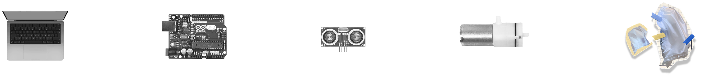
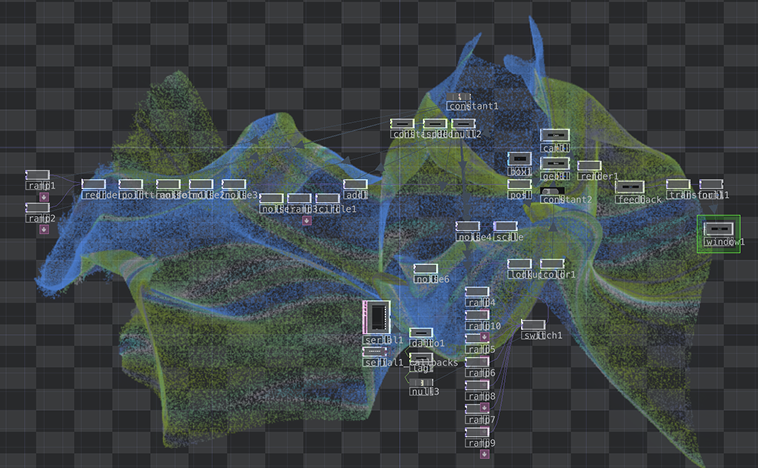
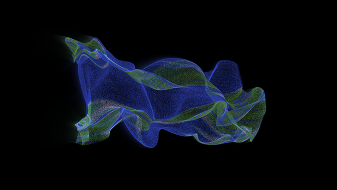
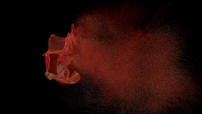
Under the hood, an Arduino Uno reads distance data from an ultrasonic sensor to detect whether the participant is inside the designated area, and drives a pump that inflates and deflates the wearable accordingly. TouchDesigner handles the projection: particle effects resemble a mist that represents the school's ubiquitous, intangible authority, collapsing and dissipating once the participant leaves the boundary.
Mindset Penalty hopes to prompt participants to reflect on the subtle,
long-term effects of micro-punishments on personal growth. If the experience
helps someone consciously recognize the invisible shackles they carry, the
installation has done its work.
Medium: wearable inflatable device, Arduino, TouchDesigner, projection,
ultrasonic sensor
Keywords: interactive installation, wearable, space interaction,
micro-discipline, speculative critique
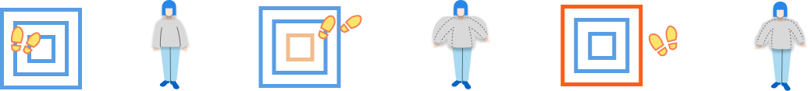